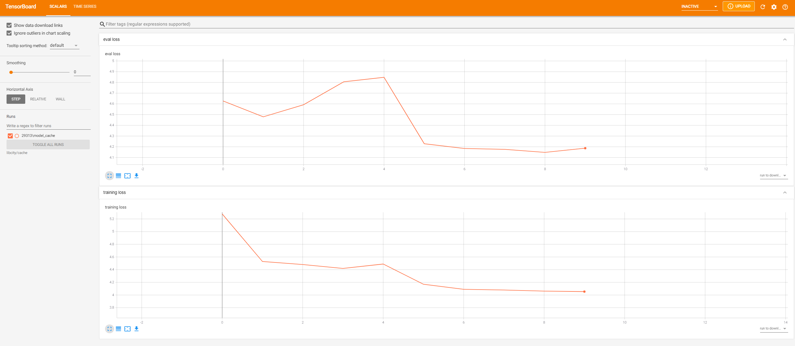

Quick Start¶
Download One Dataset¶
The dataset used in LibCity is stored in a unified data storage format named atomic files.
In order to directly use the raw datasets in LibCity, we have converted all these datasets into the format of atomic files, and provide the conversion tools.
You can simply download the datasets we have processed, the data link is BaiduDisk with code 1231 or Google Drive.
Before run models in LibCity, please make sure you download at least one dataset and put it in directory Bigscity-LibCity/raw_data/dataset_name/*.
For example, if you download the METR_LA dataset, the directorys structure is as follows:
Bigscity-LibCity/raw_data/METR_LA/METR_LA.geoBigscity-LibCity/raw_data/METR_LA/METR_LA.relBigscity-LibCity/raw_data/METR_LA/METR_LA.dynaBigscity-LibCity/raw_data/METR_LA/config.json
Run Model Pipeline¶
The script run_model.py used for training and evaluating a single model is provided in the root directory of the framework, and a series of command line parameters are provided to allow users to adjust the running parameter configuration.
When run the run_model.py, you must specify the following three parameters, namely task, dataset and model. For example:
python run_model.py --task traffic_state_pred --model GRU --dataset METR_LA
This script will run the GRU model on the METR_LA dataset for traffic state prediction task under the default configuration.
Furthermore, the script supports the input of the following command line parameters to adjust the parameter settings of the pipeline.
Supporting parameters:
task: The name of the task to be performed, includingtraffic_state_pred,traj_loc_pred,eta,map_matching,road_representation. Defaults totraffic_state_pred.model: The name of the model to be performed. Defaults toGRU. (supporting models)dataset: The dataset to be performed. Defaults toMETR_LA. (supporting datasets)config_file：The name of user-defined configuration file. Defaults toNone. (see more)saved_model：Whether to save the trained model. Defaults toTrue.train：If the model has been pre-trained, whether to retrain the model. Defaults toTrue.batch_size：The training and evaluation batch size.train_rate：The proportion of the training set to the total dataset. (The order of division is training set, validation set, test set).eval_rate：The proportion of the validation set.learning_rate：Learning_rate. The default learning rate of different models may be different, please refer to the corresponding configuration file for details.max_epoch：Maximum rounds of training. The default value varies with the model.gpu：Whether to use GPU. Defaults toTrue.gpu_id：The id of the GPU used. Defaults to0.
TensorBoard Visualization¶
During the model training process, LibCity will record the loss of each epoch, and support tensorboard visualization.
After running the model once, you can use the following command to visualize:
tensorboard --logdir 'libcity/cache'
TensorFlow installation not found - running with reduced feature set.
Serving TensorBoard on localhost; to expose to the network, use a proxy or pass --bind_all
TensorBoard 2.4.1 at http://localhost:6006/ (Press CTRL+C to quit)
Visit this address(http://localhost:6006/) in the browser to see the visualized result:
